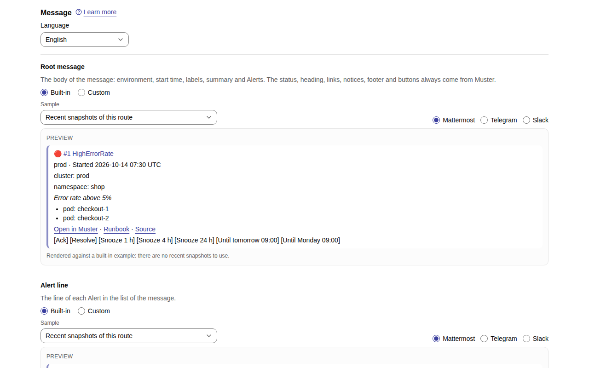
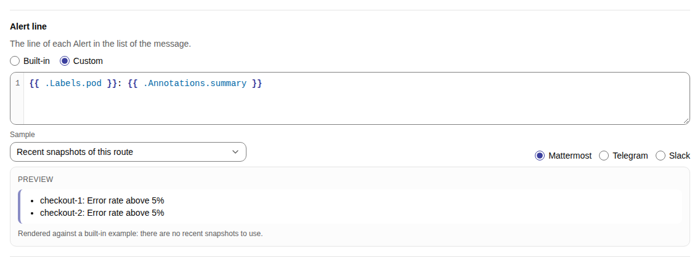
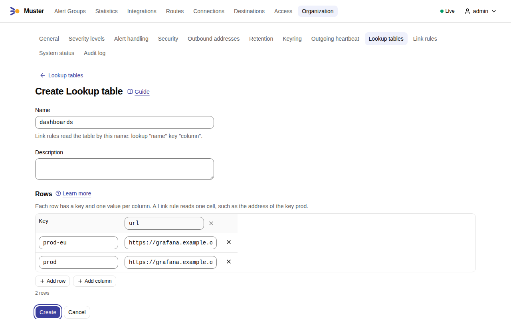
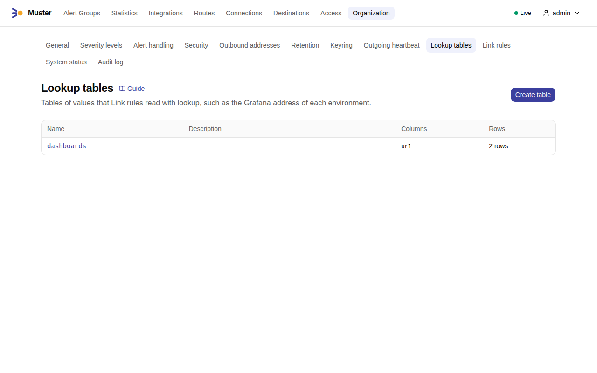
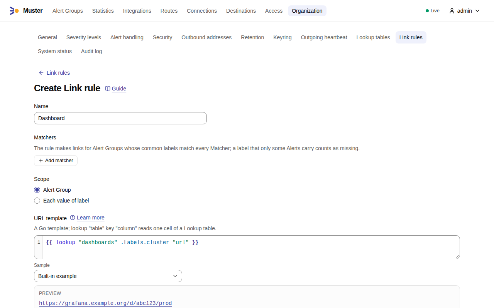
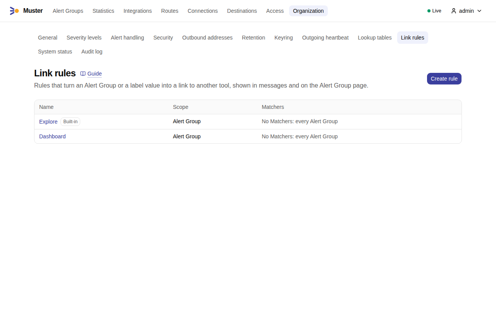

Messages and templates¶
Muster shows every Alert Group as one Root message in each Destination, and edits it as the Alert Group changes. Without any setup the message is complete: the status, the number and title, the environment and start time, the labels, the summary, the Alerts, the links and the buttons. This page is for the Admin who wants to change what it says: the template of a Route, whom a message mentions, and the links it carries.
What you can change, and what you cannot¶
A Route has three templates, under Routes → a Route → Message. Each is Built-in or Custom.
- Root message
- The body of the message: the environment, the start time, the labels, the summary and the Alerts. The status colour, the heading, the links, the notices, the footer and the buttons always come from Muster, so no template can lose the buttons or the link to the Alert Group.
- Alert line
- The line of each Alert in the list of Alerts. It is also called the Line template.
- Ack timeout notice
- The reply Muster sends when nobody acknowledges an Alert Group in time.
Language of the same section sets the language of the built-in texts of the Route, English or Russian
(route.language, English by default). Times in messages are absolute and use the Organization's time zone, never
relative: see Organization settings.
Choosing Custom fills the editor with the source of the built-in template in the Route's language, so you start from what people see today and edit it. Choosing Built-in again keeps your text until you leave the page.
Each editor has a Preview under it. Choose the Sample it renders against: a Built-in example, the Recent
snapshots of this route, or the Stored Snapshots of one Integration; and the Markup of the preview, Mattermost,
Slack or Telegram. When you save, Muster parses every template and runs it against the most recent Stored Snapshots of
the Route (up to 20, template.dry_run_sample, or the built-in example when there are none). A template that does not
parse, or that calls a function Muster does not have, is not saved: the editor marks the error at its line and
column.
The Outgoing webhook Destinations have templates of their own, written the same way: see template mode.
Edit a Route's message¶
-
Open Routes and the Route, and scroll to Message. Choose the Language of its built-in texts. Each template shows Built-in or Custom, with its Preview under it.

-
Choose Custom for the template you change, such as Alert line, and edit the source in the editor; it starts from the built-in template. The Preview renders it as you type, against the Sample you choose, in the markup of Mattermost, Telegram or Slack. A Route without recent Stored Snapshots renders against the built-in example. The template language lists what a template reads.

-
Select Save. A template with an error is not saved, and the editor marks the error at its line and column.
The template language¶
Templates are Go templates, the language of Alertmanager's own templates, and run in a sandbox:
- The functions are those of Alertmanager's templates under their own names (
toUpper,toLower,title,join,match,reReplaceAll,safeHtml,stringSlice,date,tz,humanizeDuration,toJsonand more), so an Alertmanager template usually carries over. On top of them come the string, list, map, conversion and regular expression (RE2) functions of the sprout library,nowandsincefrom Muster's clock, and two Muster functions:lookup(see Links) andmention. - There is no function that reads the environment, files or the network;
envdoes not exist. Muster has no list of functions in the web UI: sprout's documentation and Alertmanager's template reference are the function reference, and the editor names an unknown function when you save. - Loops are capped, a template may run for 2 seconds, and the output is cut at about 50,000 characters
(
template.output_cap). - A label or annotation that is not there is empty text, as in Alertmanager:
{{ .Labels.cluster }}prints nothing and passes""to a function, sotoJsongives"", notnull. Tell a missing value apart withiforor, as in{{ or .CommonLabels.team "none" }}.
What the Root message template reads:
.AlertGroupNumber,Title,Summary,Status,Route,SeverityLevel,Urgent,StartedAt,URL,ReopenCount,Owner..Alerts,.Status,.GroupLabels,.CommonLabels,.CommonAnnotations,.ExternalURL- As in Alertmanager's templates.
.Alerts.Firingand.Alerts.Resolvedselect by status.
The line template reads one Alert directly, as .Labels, .Annotations, .Status, .StartsAt, .EndsAt,
.GeneratorURL and .Fingerprint, and .AlertGroup as above.
Alert data is safe by construction. Label and annotation values arrive already escaped for the Destination's markup,
cut at 4 KB each (message.value_cap), and an @ in them is neutralised with a zero-width space, so @channel in a
label notifies nobody. Links in messages are http or https only.
Two small examples
A line template that shows the pod and its summary:
{{ .Labels.pod }}: {{ .Annotations.summary }}
A Root message template that shows the summary and the pods that fire:
{{ .AlertGroup.Summary }}
{{ range .Alerts.Firing }}- {{ .Labels.pod }}
{{ end }}
Check both in the preview with a sample that has Alerts before you save.
If a template that was saved fails later, on data it did not expect, Muster does not drop the message. It renders the
Fallback template instead, which shows every label under Muster's heading, footer and buttons. The Route shows
Template error with the time and the error, the Timeline records that the fallback was used, and the Internal alert
MusterTemplateError fires until the template renders again; see its
runbook. Organization → System status lists the template errors.
A long message is shortened to the limit of the messenger by cutting the list of Alerts first, then the label sections.
It always keeps the title, status, footer, buttons and the link. The list shows up to 10 lines of Alerts
(message.alerts_listed); above that it shows the distinct values of each label that differs, and "Full list in
Muster".
Whom a message mentions¶
Each Destination has a Mentions section for six kinds of Loud event: nobody by default, or everyone in the chat,
chosen Muster users, or messenger groups, as far as the messenger offers them (destination.mentions). The
Loud and Quiet page lists what each Destination type takes and why a user
needs an Account link to be mentioned.
In a template, {{ mention "all" }}, {{ mention "channel" }}, {{ mention "here" }}, {{ mention "owner" }} and
{{ mention "group" "oncall" }} write a trusted Mention that Muster renders for the messenger. A literal @all written
in a template is escaped and mentions nobody.
Links¶
Links to other tools come from data, not from code in a message: Link rules read Lookup tables. They appear as one line in the message and as the Links block on the Alert Group page.
Add a Lookup table¶
A Lookup table is a table of values: a key and one value per named column. Limits: 50 columns and 10,000 rows,
names and column names up to 200 characters, a description up to 2,000, a key or value up to 4,096
(lookup_table.size_max).
- Open Organization → Lookup tables and select Create table.
-
Enter the Name that Link rules read the table by, and a Description if you like. Under Rows, name the first column, add more with Add column, and add each row with Add row: its Key and a value per column.

-
Select Create. The list of Lookup tables shows the table with its number of rows.

Add a Link rule¶
A Link rule turns an Alert Group, or each value of a label, into a link. Its fields:
- Name
- Shown as the text of the link.
- Matchers
- Conditions on the Alert Group's common labels. A label that only some Alerts carry counts as missing. Without Matchers the rule applies to every Alert Group.
- Scope
- Alert Group gives one link. Each value of label gives one link per distinct value of a label among the Alerts.
- URL template
- A Go template. It reads
.Labels(the common labels for the scope Alert Group, the labels of the first Alert with the value otherwise),.Value(the label's value) and the data of the Root message template.lookup "table" key "column"reads one cell and gives an empty text when the table, the key or the column does not exist. A template that writes nothing, or something that is not anhttporhttpsURL, gives no link.
- Open Organization → Link rules and select Create rule.
-
Fill in the fields above. The Preview under the URL template shows the link that the rule makes for the Sample you choose, a built-in example or a recent Alert Group.

-
Select Create. The list of Link rules shows the rule beside the built-in Explore.

All the Link rules of one message together read at most 100 rows with lookup in one render
(template.lookups_per_render); the 101st is a template error, and a Link rule that fails is left out of the message
and counted.
Example: a dashboard per cluster.
- Create the Lookup table
dashboardswith the columnurland one row for each cluster: the keyprod-eu, the valuehttps://grafana.example.org/d/abc123/prod-eu. - Create the Link rule
Dashboard, scope Alert Group, with the URL template{{ lookup "dashboards" .Labels.cluster "url" }}. An Alert Group without a commonclusterlooks up an empty key and gets no link: a missing label is empty text. - The preview of the rule shows the link for a sample. Alert Groups with
cluster="prod-eu"now carry Dashboard.
A rule with the scope Each value of label and the label pod can build one log link per pod:
https://logs.example.org/search?pod={{ .Value | urlquery }}.
Muster adds links without a rule as well: the annotations runbook_url and dashboard_url, shown as Runbook and
Dashboard, and the generatorURL of the first firing Alert, shown as Source.
The built-in Link rule Explore opens the query of the Alert in Grafana's Explore. It reads the Lookup table
grafana with the columns address (the address of your Grafana) and datasource_uid, and the key is the value of the
environment label, else of the cluster label. It cannot be deleted, renamed or given another scope; its Matchers and
URL template can be changed. A Lookup table that a Link rule reads cannot be deleted or renamed.
The API has lookup-tables and link-rules for the same: see the API reference. A list of
Lookup tables comes at most 50 to a page (lookup_table.page_max), since each carries its rows.
Thread replies¶
Lifecycle events that are Thread replies, such as a Takeover or a Reopen, are sent at once. Only new Alerts are
batched, by the Route's Thread batching window (Routes → a Route → Delivery, route.thread_batching_window, 60
seconds by default): the first new Alert is sent at once and opens the window, and the new Alerts that arrive within it
are sent as one reply when it closes. After a quiet period longer than the window, the next one is again immediate. A
reply lists the first 10 new Alerts and then "…and K more" (delivery.thread_alerts_listed).